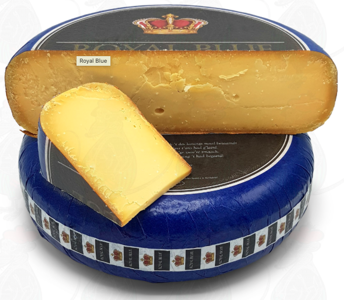
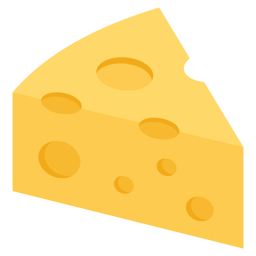

Week 2 Exercise 2: Cheese
Martijn van Dam ![]()
Favorite cheese
Royal Blue Old Cheese from the Goudse Kaasshop
(Fictive) Price of a kg Royal Blue Cheese in Euros
The package DT was used for the interactive table (Xie, Cheng, and Tan 2024)
Interactive Plot of Cheese Prices
Note. the R-code is executed behind the scenes, but not shown. The package plotly was used for the plot (Sievert 2020)
Two columns
Pro’s of Royal Blue Old
- Delicious
- Pairs good with red wine
- Has a cool name
Cons of Royal Blue Old
- There are none
Multi-Row Aligned Equation
\[\begin{aligned} y &= ax^2 + bx + c \\ &= (x + 1)^2 + 2x + 3 \\ &= x^2 + 2x + 1 + 2x + 3 \\ &= x^2 + 4x + 4 \end{aligned}\]R Code for Price Generation
Cached and Labeled R Code
{r}
#| cache: TRUE
#| label: generated-data
# Generate data for years 2006 to 2025
set.seed(42)
years <- 2006:2025
base_price <- 15
annual_growth <- 0.05
# Generate prices with random fluctuation
prices <- sapply(0:(length(years) - 1), function(i) {
round(base_price * ((1 + annual_growth)^i) * runif(1, 0.95, 1.05), 2)
})Note. the code chunk shown is actually being executed behind the scenes.
renv reproducible environment
Here, we create a reproducible environment with renv (Ushey and Wickham 2024).
References
Goudse Kaasshop. n.d. “Royal Blue Cheese.” https://www.goudsekaasshop.nl/royal-blue.html.
Sievert, Carson. 2020. Interactive Web-Based Data Visualization with r, Plotly, and Shiny. Chapman; Hall/CRC. https://plotly-r.com.
Ushey, Kevin, and Hadley Wickham. 2024. Renv: Project Environments. https://CRAN.R-project.org/package=renv.
Vectorsclub. n.d. “Cheese Block Icons.” https://www.flaticon.com/free-icons/cheese-block.
Xie, Yihui, Joe Cheng, and Xianying Tan. 2024. DT: A Wrapper of the JavaScript Library ’DataTables’. https://CRAN.R-project.org/package=DT.
